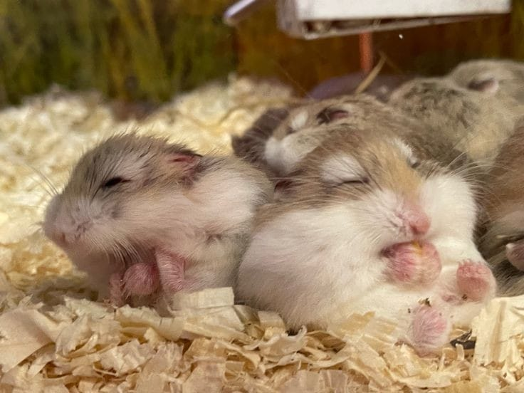

Welcome to Petopia, your premier destination for professional hamster care services. From expert grooming and specialized healthcare to behavioral consultations and a curated selection of quality products, we have everything you need to ensure the well-being of your beloved hamster. Trust us to provide the care, expertise, and personalized attention your furry friend deserves. Welcome to a world of professional hamster care at Petopia.
|
Hamster GroomingAt just 150AEDOur professional hamster grooming services are designed to keep your furry friend looking and feeling their best. Our experienced groomers provide gentle bathing, precise nail trimming, and meticulous coat maintenance, all while prioritizing the comfort and well-being of your hamster. Trust us to enhance your hamster's appearance and ensure they are happy and healthy. |
|
BoardingFrom just 70AED per dayWhen you're away, our safe and comfortable hamster boarding facilities offer a temporary home for your little companion. With spacious enclosures, clean bedding, and regular feeding, we provide a nurturing environment where your hamster can feel secure and receive individualized attention from our caring staff. Enjoy peace of mind knowing your hamster is in good hands. |
 |
|
Habitat Set-UpStarting at just 125AEDCreating the perfect habitat for your hamster is crucial to their well-being. Our experts are here to assist you in designing a suitable and enriching environment for your hamster. From selecting the right cage and accessories to arranging bedding and hiding spots, we ensure your hamster's habitat is safe, stimulating, and tailored to their needs |
|
Excercise and EnrichmentAt from just 85AEDPhysical activity and mental stimulation are essential for a happy and healthy hamster. Our knowledgeable staff can recommend exercise routines, interactive toys, and enrichment activities to keep your hamster active and engaged. We believe in providing a well-rounded environment that promotes your hamster's overall well-being. |
|
Health CareAt just 75AED per dayAt Petopia, we offer comprehensive healthcare services for hamsters. Our skilled veterinarians provide routine check-ups, vaccinations, and preventive treatments to keep your hamster in optimal health. With a focus on preventive medicine and early detection, we are committed to providing the highest standard of care for your beloved hamster. |
|
AdoptionStarting from 150AEDFind your furry friend through our professional hamster adoption service. We match hamsters in need with loving homes, offering guidance and care. With transparency and personalized support, we make the adoption process a joy. Join our community committed to small pet welfare and give a deserving hamster a second chance at a loving home. Experience the happiness of hamster adoption today. |
|
Reviews"The team at Petopia helped me set up the perfect habitat for my hamster, and I couldn't be happier. They guided me in choosing the right cage, bedding, and accessories, ensuring that my hamster has a stimulating and cozy home. Their knowledge and expertise made the process easy and enjoyable. Thank you, Petopia!" "When I went on vacation, I chose Petopia for boarding my hamster, and it was a fantastic experience. The facilities were clean and well-maintained, and the staff was friendly and attentive. They took excellent care of my hamster, providing a comfortable and safe environment. I'm grateful to have found such a reliable boarding service." "I've been bringing my hamster to Petopia for healthcare, and the veterinarians here are fantastic. They provide comprehensive check-ups, vaccinations, and helpful advice on hamster care. They genuinely care about the well-being of my hamster and have helped me ensure she's healthy and happy. Highly recommended!" "I took my hamster to Petopia for grooming, and I'm thrilled with the results! The staff was gentle and caring, making sure my little friend was comfortable throughout the grooming session. The nails were trimmed perfectly, and the coat is now shiny and soft. Thank you, Petopia, for keeping my hamster looking fabulous!" "I can't thank Petopia enough for their incredible hamster exercise and enrichment service. My hamster, Whiskers, was becoming a little bored and restless, so I decided to give this service a try. The knowledgeable staff at Petopia provided me with a variety of exercise options and interactive toys that have truly transformed Whiskers' daily routine. Now, she spends hours happily exploring tunnels, running on her hamster wheel, and solving puzzle toys. I've noticed a significant improvement in her overall mood and well-being. Thank you, Petopia, for giving my hamster the opportunity to thrive and have fun!" |